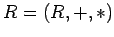

Unterringe, Ideale
- 1. Unterring:
- Es sei  ein Ring und Ist U bezüglich + und
 wieder ein Ring, so heißt ein Unterring von R.
wieder ein Ring, so heißt ein Unterring von R.
Eine nichtleere Teilmenge U eines Ringes bildet genau dann einen Unterring von R, wenn für alle  auch a+(-b) und
auch a+(-b) und  in U liegen (Unterringkriterium).
in U liegen (Unterringkriterium).
- 2. Ideal:
- Ein Unterring I heißt Ideal, wenn für alle und sowohl als auch in I liegen. Diese speziellen Unterringe sind die Grundlage für die Bildung von Faktorringen.
Die trivialen Unterringe {0} und R sind auch stets Ideale von R. Körper haben nur triviale Ideale.
- 3. Hauptideal:
- Sämtliche Ideale von
 sind Hauptideale, d.h. Ideale, die von einem Ringelement ,,erzeugt`` werden können. Sie werden in der Form geschrieben und mit (m) bezeichnet.
sind Hauptideale, d.h. Ideale, die von einem Ringelement ,,erzeugt`` werden können. Sie werden in der Form geschrieben und mit (m) bezeichnet.